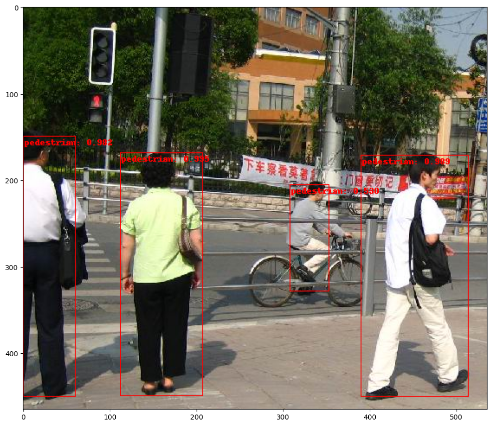

from typing import Optional, Callable
import torch.nn as nn
from torch import Tensor
from torch.ao.nn.quantized import FloatFunctional
from torchvision.models.resnet import conv1x1, conv3x3
class BottleneckQuantizeable(nn.Module):
# Bottleneck in torchvision places the stride for downsampling at 3x3 convolution(self.conv2)
# while original implementation places the stride at the first 1x1 convolution(self.conv1)
# according to "Deep residual learning for image recognition" https://arxiv.org/abs/1512.03385.
# This variant is also known as ResNet V1.5 and improves accuracy according to
# https://ngc.nvidia.com/catalog/model-scripts/nvidia:resnet_50_v1_5_for_pytorch.
expansion: int = 4
def __init__(
self,
inplanes: int,
planes: int,
stride: int = 1,
downsample: Optional[nn.Module] = None,
groups: int = 1,
base_width: int = 64,
dilation: int = 1,
norm_layer: Optional[Callable[..., nn.Module]] = None,
) -> None:
super().__init__()
if norm_layer is None:
norm_layer = nn.BatchNorm2d
width = int(planes * (base_width / 64.0)) * groups
# Both self.conv2 and self.downsample layers downsample the input when stride != 1
self.conv1 = conv1x1(inplanes, width)
self.bn1 = norm_layer(width)
self.relu1 = nn.ReLU(inplace=True)
self.conv2 = conv3x3(width, width, stride, groups, dilation)
self.bn2 = norm_layer(width)
self.relu2 = nn.ReLU(inplace=True)
self.conv3 = conv1x1(width, planes * self.expansion)
self.bn3 = norm_layer(planes * self.expansion)
self.relu3 = nn.ReLU(inplace=True)
self.downsample = downsample
self.stride = stride
self.ff_add = FloatFunctional()
def forward(self, x: Tensor) -> Tensor:
identity = x
out = self.conv1(x)
out = self.bn1(out)
out = self.relu1(out)
out = self.conv2(out)
out = self.bn2(out)
out = self.relu2(out)
out = self.conv3(out)
out = self.bn3(out)
if self.downsample is not None:
identity = self.downsample(x)
out = self.ff_add.add(out, identity)
out = self.relu3(out)
return outAt the time of writing this quantization in PyTorch was relatively new to me, and I wanted a deep dive on the topic for something non-trivial. After reading about different quantization modes (eager vs graph fx) as well as quantization methods (dynamic, static post-training, static aware-training), I decide to try eager mode quantization aware training (QAT).
In my research for a project, I came across multiple discussions online requesting either help or a tutorial for quantizing the backbone of an object detection model (faster R-CNN in this case). As far as I could tell there was nothing available so this was the perfect excuse.
So in this post, I will go through that process of quantization-aware training and include some analysis on the benefits of quantization.
ResNet and Feature Pyramid Network
This assumes some familiarity with the R-CNN architecture, but to refresh, the feature extraction backbone consists of two components; the resnet and the feature pyramid network. The FPN combines output from consecutive layers of the resnet (via upsampling) which allows it to extract semantic information at higher resolutions. These two components of the backbone can be quantized while the rest of the network still uses floating point precision.
From an implementation standpoint, there is a utility class IntermediateLayerGetter for extracting each layer output (no fully connected) from the resnet. And another convenience class for the FPN which takes the layer ouputs as input. Combining these two is BackboneWithFPN which is mostly just a thin wrapper around both.
As we are doing eager mode static quantization, we’ll need to prepare the model before we can train it and subsequently quantize it.
Model Preparation
The first step in preparing the network for quantization is to create a modified bottleneck block. This isn’t obvious until you try to quantize the ResNet without it. You will get an error .. out += identity .. Could not run 'aten::add.out' .. which means that PyTorch isn’t able to quantize the skip connection using the += operator in eager mode. This discussion on the pytorch forums was helpful for describing the error as well as how to fix it. The modified bottleneck block just uses FloatFunctional which has a quantized addition operator. I’m using ResNet 101 here but for much smaller networks you would want to modify the basic block. Also, the original bottleneck class reuses the ReLU layer which won’t work when fusing. Finding this blog post about quantizing ResNet was helpful for realizing and avoiding that pitfall.
Now that we have a quantizeable bottleneck, we can simply reference it when generating the ResNet. Even though the float functional operator was added, we can still load pretrained imagenet weights since the trainable submodules didn’t change. Note that the number of classes for the ResNet don’t matter here because we will extract intermediate layers and ignore the final fully connected layer.
from torchvision.models.resnet import ResNet, ResNet50_Weights, ResNet101_Weights
def resnet_101():
resnet = ResNet(block=BottleneckQuantizeable, layers=[3, 4, 23, 3])
resnet.load_state_dict(ResNet101_Weights.DEFAULT.get_state_dict(progress=True))
return resnet
resnet = resnet_101()The next step would be to pass the resnet to the IntermediateLayerGetter. In addition to the resnet we created, this class also requires a dictionary of the layer names (to know what to extract). It returns an OrderedDict of those layer outputs. Here’s an example using a toy image.
import torch
from torchvision.models._utils import IntermediateLayerGetter
returned_layers = [1, 2, 3, 4] # get all 4 layers
return_layers = {f"layer{k}": str(v) for v, k in enumerate(returned_layers)} # {'layer1': 0, 'layer2': 1, ...}
resnet_layers = IntermediateLayerGetter(resnet, return_layers=return_layers)
out = resnet_layers(torch.rand(1, 3, 200, 200)) # e.g. 200 x 200 image with 3 channels
[(k, v.shape) for k, v in out.items()][('0', torch.Size([1, 256, 50, 50])),
('1', torch.Size([1, 512, 25, 25])),
('2', torch.Size([1, 1024, 13, 13])),
('3', torch.Size([1, 2048, 7, 7]))]As mentioned, the output of the resnet layers will be fed to the feature pyramid network. Before we can do this, the FPN also needs to be modified as it uses the addition operator +. There is also a functional F.interpolate that doesn’t need to be replaced, however it does need to be referenced differently as importing torch.nn.functional as F causes a namespace issue later with torchvision and QAT will fail.
from collections import OrderedDict
from typing import List, Dict
# importing as 'F' causes namespace collision with torchvision and QAT fails later
# import torch.nn.functional as F
import torch
from torchvision.ops.misc import Conv2dNormActivation
from torchvision.utils import _log_api_usage_once
from torchvision.ops.feature_pyramid_network import ExtraFPNBlock
class FeaturePyramidNetworkQuantizeable(nn.Module):
"""
Module that adds a FPN from on top of a set of feature maps. This is based on
`"Feature Pyramid Network for Object Detection" <https://arxiv.org/abs/1612.03144>`_.
The feature maps are currently supposed to be in increasing depth
order.
The input to the model is expected to be an OrderedDict[Tensor], containing
the feature maps on top of which the FPN will be added.
Args:
in_channels_list (list[int]): number of channels for each feature map that
is passed to the module
out_channels (int): number of channels of the FPN representation
extra_blocks (ExtraFPNBlock or None): if provided, extra operations will
be performed. It is expected to take the fpn features, the original
features and the names of the original features as input, and returns
a new list of feature maps and their corresponding names
norm_layer (callable, optional): Module specifying the normalization layer to use. Default: None
Examples::
>>> m = torchvision.ops.FeaturePyramidNetwork([10, 20, 30], 5)
>>> # get some dummy data
>>> x = OrderedDict()
>>> x['feat0'] = torch.rand(1, 10, 64, 64)
>>> x['feat2'] = torch.rand(1, 20, 16, 16)
>>> x['feat3'] = torch.rand(1, 30, 8, 8)
>>> # compute the FPN on top of x
>>> output = m(x)
>>> print([(k, v.shape) for k, v in output.items()])
>>> # returns
>>> [('feat0', torch.Size([1, 5, 64, 64])),
>>> ('feat2', torch.Size([1, 5, 16, 16])),
>>> ('feat3', torch.Size([1, 5, 8, 8]))]
"""
_version = 2
def __init__(
self,
in_channels_list: List[int],
out_channels: int,
extra_blocks: Optional[ExtraFPNBlock] = None,
norm_layer: Optional[Callable[..., nn.Module]] = None,
):
super().__init__()
_log_api_usage_once(self)
self.inner_blocks = nn.ModuleList()
self.layer_blocks = nn.ModuleList()
for in_channels in in_channels_list:
if in_channels == 0:
raise ValueError("in_channels=0 is currently not supported")
inner_block_module = Conv2dNormActivation(
in_channels, out_channels, kernel_size=1, padding=0, norm_layer=norm_layer, activation_layer=None
)
layer_block_module = Conv2dNormActivation(
out_channels, out_channels, kernel_size=3, norm_layer=norm_layer, activation_layer=None
)
self.inner_blocks.append(inner_block_module)
self.layer_blocks.append(layer_block_module)
# initialize parameters now to avoid modifying the initialization of top_blocks
for m in self.modules():
if isinstance(m, nn.Conv2d):
nn.init.kaiming_uniform_(m.weight, a=1)
if m.bias is not None:
nn.init.constant_(m.bias, 0)
if extra_blocks is not None:
if not isinstance(extra_blocks, ExtraFPNBlock):
raise TypeError(f"extra_blocks should be of type ExtraFPNBlock not {type(extra_blocks)}")
self.extra_blocks = extra_blocks
self.ff_add = FloatFunctional()
def _load_from_state_dict(
self,
state_dict,
prefix,
local_metadata,
strict,
missing_keys,
unexpected_keys,
error_msgs,
):
version = local_metadata.get("version", None)
if version is None or version < 2:
num_blocks = len(self.inner_blocks)
for block in ["inner_blocks", "layer_blocks"]:
for i in range(num_blocks):
for type in ["weight", "bias"]:
old_key = f"{prefix}{block}.{i}.{type}"
new_key = f"{prefix}{block}.{i}.0.{type}"
if old_key in state_dict:
state_dict[new_key] = state_dict.pop(old_key)
super()._load_from_state_dict(
state_dict,
prefix,
local_metadata,
strict,
missing_keys,
unexpected_keys,
error_msgs,
)
def get_result_from_inner_blocks(self, x: Tensor, idx: int) -> Tensor:
"""
This is equivalent to self.inner_blocks[idx](x),
but torchscript doesn't support this yet
"""
num_blocks = len(self.inner_blocks)
if idx < 0:
idx += num_blocks
out = x
for i, module in enumerate(self.inner_blocks):
if i == idx:
out = module(x)
return out
def get_result_from_layer_blocks(self, x: Tensor, idx: int) -> Tensor:
"""
This is equivalent to self.layer_blocks[idx](x),
but torchscript doesn't support this yet
"""
num_blocks = len(self.layer_blocks)
if idx < 0:
idx += num_blocks
out = x
for i, module in enumerate(self.layer_blocks):
if i == idx:
out = module(x)
return out
def forward(self, x: Dict[str, Tensor]) -> Dict[str, Tensor]:
"""
Computes the FPN for a set of feature maps.
Args:
x (OrderedDict[Tensor]): feature maps for each feature level.
Returns:
results (OrderedDict[Tensor]): feature maps after FPN layers.
They are ordered from the highest resolution first.
"""
# unpack OrderedDict into two lists for easier handling
names = list(x.keys())
x = list(x.values())
last_inner = self.get_result_from_inner_blocks(x[-1], -1)
results = []
results.append(self.get_result_from_layer_blocks(last_inner, -1))
for idx in range(len(x) - 2, -1, -1):
inner_lateral = self.get_result_from_inner_blocks(x[idx], idx)
feat_shape = inner_lateral.shape[-2:]
inner_top_down = torch.nn.functional.interpolate(last_inner, size=feat_shape, mode="nearest")
# last_inner = inner_lateral + inner_top_down
last_inner = self.ff_add.add(inner_lateral, inner_top_down)
results.insert(0, self.get_result_from_layer_blocks(last_inner, idx))
if self.extra_blocks is not None:
results, names = self.extra_blocks(results, x, names)
# make it back an OrderedDict
out = OrderedDict([(k, v) for k, v in zip(names, results)])
return outAs you can see from the signature of the modified FPN, it also needs to know input dimensions of each layer from the resnet. There are several ways to get this but one way is to simply get the number of features in the final module of each layer.
# from backbone_utils.py
# https://github.com/pytorch/vision/blob/main/torchvision/models/detection/backbone_utils.py#L145
# in_channels_stage2 = res101_layers.inplanes // 8
# in_channels_list = [in_channels_stage2 * 2 ** (i - 1) for i in returned_layers]
in_channels_list = []
for k1, m1 in resnet.named_children():
if 'layer' in k1:
in_channels_list.append((m1[-1].bn3.num_features))
in_channels_list[256, 512, 1024, 2048]Next step is to create a modified BackboneWithFPN that uses our FeaturePyramidNetworkQuantizeable. Here we’ll also make sure that the inputs are quantized and the outputs subsequently dequantized so that they can be fed to the R-CNN.
One important note is that regular BatchNorm2d is the default and used here instead of FrozenBatchNorm2d. Frozen batch norm is the recommended layer because batches are generally too small for good estimates of mean and variance statistics but it isn’t quantizeable. So using regular batch norm could be unstable and less performant if those layers aren’t frozen before training.
from torchvision.ops.feature_pyramid_network import LastLevelMaxPool
from torchvision.models._utils import IntermediateLayerGetter
from torch.ao.quantization import QuantStub, DeQuantStub
class BackboneWithFPNQuantizeable(nn.Module):
def __init__(
self,
backbone: nn.Module,
return_layers: Dict[str, str],
in_channels_list: List[int],
out_channels: int,
extra_blocks: Optional[ExtraFPNBlock] = None,
norm_layer: Optional[Callable[..., nn.Module]] = None,
) -> None:
super().__init__()
self.quant = QuantStub()
self.dequant = DeQuantStub()
if extra_blocks is None:
extra_blocks = LastLevelMaxPool()
self.body = IntermediateLayerGetter(backbone, return_layers=return_layers)
self.fpn = FeaturePyramidNetworkQuantizeable(
in_channels_list=in_channels_list,
out_channels=out_channels,
extra_blocks=extra_blocks,
norm_layer=norm_layer
)
self.out_channels = out_channels
def forward(self, x: Tensor) -> Dict[str, Tensor]:
x = self.quant(x)
x = self.body(x)
x = self.fpn(x)
for k, v in x.items():
x[k] = self.dequant(v)
return xNow we can crate the modified backbone with FPN. Once created, there should be quant/dequant stubs visible in the network like so
BackboneWithFPNQuantizeable(
(quant): QuantStub()
(dequant): DeQuantStub()
(body): IntermediateLayerGetter(
(conv1): Conv2d(3, 64, kernel_size=(7, 7), stride=(2, 2), padding=(3, 3), bias=False)
(bn1): BatchNorm2d(64, eps=1e-05, momentum=0.1, affine=True, track_running_stats=True)
(relu): ReLU(inplace=True)
(maxpool): MaxPool2d(kernel_size=3, stride=2, padding=1, dilation=1, ceil_mode=False)
(layer1): Sequential(
(0): BottleneckQuantizeable(
(conv1): Conv2d(64, 64, kernel_size=(1, 1), stride=(1, 1), bias=False)
(bn1): BatchNorm2d(64, eps=1e-05, momentum=0.1, affine=True, track_running_stats=True)
...# resnet = resnet_101()
# returned_layers = [1, 2, 3, 4]
# return_layers = {f"layer{k}": str(v) for v, k in enumerate(returned_layers)}
# in_channels_list = []
# for k1, m1 in resnet.named_children():
# if 'layer' in k1:
# in_channels_list.append((m1[-1].bn3.num_features))
bbfpn = BackboneWithFPNQuantizeable(
backbone=resnet,
return_layers=return_layers,
in_channels_list=in_channels_list,
out_channels=256,
extra_blocks=None,
norm_layer=None,
)
# bbfpnNow the backbone with FPN can be plugged into the FasterRCNN. The number of classes is set to 2 for either object or background which is specific to the dataset used here.
from torchvision.models.detection.faster_rcnn import FasterRCNN
quant_rcnn = FasterRCNN(bbfpn, num_classes=2)Layer Fusion and Quantization Config
Before training and subsequently converting the model, we can fuse specific sequences of modules in the backbone. Fusing compresses the model making it smaller and run faster by combining modules like Conv2d-BatchNorm2d-ReLU and Conv2d-BatchNorm2d. After fusing you should see new fused modules in the network like ConvReLU2d as well as Identity where previous modules were.
FasterRCNN(
(transform): GeneralizedRCNNTransform(
Normalize(mean=[0.485, 0.456, 0.406], std=[0.229, 0.224, 0.225])
Resize(min_size=(800,), max_size=1333, mode='bilinear')
)
(backbone): BackboneWithFPNQuantizeable(
(body): IntermediateLayerGetter(
(conv1): ConvReLU2d(
(0): Conv2d(3, 64, kernel_size=(7, 7), stride=(2, 2), padding=(3, 3))
(1): ReLU(inplace=True)
)
(bn1): Identity()
(relu): Identity()
(maxpool): MaxPool2d(kernel_size=3, stride=2, padding=1, dilation=1, ceil_mode=False)
(layer1): Sequential(
(0): BottleneckQuantizeable(
(conv1): ConvReLU2d(
(0): Conv2d(64, 64, kernel_size=(1, 1), stride=(1, 1))
(1): ReLU(inplace=True)
)
(bn1): Identity()
(relu1): Identity()
...from torch.ao.quantization import fuse_modules
quant_rcnn.eval()
# fuse stem
fuse_modules(quant_rcnn.backbone.body, [['conv1', 'bn1', 'relu']], inplace=True)
# fuse blocks
for k1, m1 in quant_rcnn.backbone.body.named_children():
if "layer" in k1: # in sequential layer with blocks
for k2, m2 in m1.named_children():
fuse_modules(m2, [["conv1", "bn1", "relu1"], ["conv2", "bn2", "relu2"], ["conv3", "bn3"]], inplace=True)
for k3, m3 in m2.named_children():
if "downsample" in k3: # fuse downsample
fuse_modules(m3, [["0", "1"]], inplace=True)Before training the quantization config needs to be set (on the backbone only). And again, because the batches are so small, batch norm gets frozen (see this pytorch tutorial for another example). Last, I’ll freeze the stem and the first layer in the backbone since the pretrained imagenet weights were loaded. After preparation you should be able to see the observers in the network.
FasterRCNN(
(transform): GeneralizedRCNNTransform(
Normalize(mean=[0.485, 0.456, 0.406], std=[0.229, 0.224, 0.225])
Resize(min_size=(800,), max_size=1333, mode='bilinear')
)
(backbone): BackboneWithFPNQuantizeable(
(body): IntermediateLayerGetter(
(conv1): ConvReLU2d(
3, 64, kernel_size=(7, 7), stride=(2, 2), padding=(3, 3)
(weight_fake_quant): FusedMovingAvgObsFakeQuantize(
fake_quant_enabled=tensor([1]), observer_enabled=tensor([1]), scale=tensor([1.]), zero_point=tensor([0], dtype=torch.int32), dtype=torch.qint8, quant_min=-128, quant_max=127, qscheme=torch.per_channel_symmetric, reduce_range=False
(activation_post_process): MovingAveragePerChannelMinMaxObserver(min_val=tensor([]), max_val=tensor([]))
)
(activation_post_process): FusedMovingAvgObsFakeQuantize(
fake_quant_enabled=tensor([1]), observer_enabled=tensor([1]), scale=tensor([1.]), zero_point=tensor([0], dtype=torch.int32), dtype=torch.quint8, quant_min=0, quant_max=127, qscheme=torch.per_tensor_affine, reduce_range=True
(activation_post_process): MovingAverageMinMaxObserver(min_val=inf, max_val=-inf)
)
)
(bn1): Identity()
...import re
import torch
from torch.ao.quantization import get_default_qat_qconfig, prepare_qat
quant_rcnn.train()
quant_rcnn.backbone.qconfig = get_default_qat_qconfig('fbgemm')
quant_rcnn_prepared = prepare_qat(quant_rcnn, inplace=False)
quant_rcnn_prepared = quant_rcnn_prepared.apply(torch.nn.intrinsic.qat.freeze_bn_stats)
quant_rcnn_prepared.backbone.body.conv1.weight.requires_grad = False
for name, parameter in quant_rcnn_prepared.backbone.named_parameters():
if re.search(r".layer1", name):
parameter.requires_grad = FalseDataset, Training, and Conversion
I’ll be using the PennFudan dataset from the Torchvision object detection finetuning tutorial for QAT. Most of the code below is borrowed from that tutorial with slight modifications and no segmentation.
import os
import torch
from torchvision.io import read_image
from torchvision.ops.boxes import masks_to_boxes
from torchvision import tv_tensors
from torchvision.transforms.v2 import functional as F # careful namespace 'F'
from torchvision.transforms import v2 as T
class PennFudanDataset(torch.utils.data.Dataset):
def __init__(self, root, transforms):
self.root = root
self.transforms = transforms
# load all image files, sorting them to
# ensure that they are aligned
self.imgs = list(sorted(os.listdir(os.path.join(root, "PNGImages"))))
self.masks = list(sorted(os.listdir(os.path.join(root, "PedMasks"))))
def __getitem__(self, idx):
# load images and masks
img_path = os.path.join(self.root, "PNGImages", self.imgs[idx])
mask_path = os.path.join(self.root, "PedMasks", self.masks[idx])
img = read_image(img_path)
mask = read_image(mask_path)
# instances are encoded as different colors
obj_ids = torch.unique(mask)
# first id is the background, so remove it
obj_ids = obj_ids[1:]
num_objs = len(obj_ids)
# split the color-encoded mask into a set
# of binary masks
masks = (mask == obj_ids[:, None, None]).to(dtype=torch.uint8)
# get bounding box coordinates for each mask
boxes = masks_to_boxes(masks)
# there is only one class
labels = torch.ones((num_objs,), dtype=torch.int64)
image_id = idx
area = (boxes[:, 3] - boxes[:, 1]) * (boxes[:, 2] - boxes[:, 0])
# suppose all instances are not crowd
iscrowd = torch.zeros((num_objs,), dtype=torch.int64)
# Wrap sample and targets into torchvision tv_tensors:
img = tv_tensors.Image(img)
target = {}
target["boxes"] = tv_tensors.BoundingBoxes(boxes, format="XYXY", canvas_size=F.get_size(img))
target["masks"] = tv_tensors.Mask(masks)
target["labels"] = labels
target["image_id"] = image_id
target["area"] = area
target["iscrowd"] = iscrowd
if self.transforms is not None:
img, target = self.transforms(img, target)
return img, target
def __len__(self):
return len(self.imgs)
def get_transform(train):
transforms = []
if train:
transforms.append(T.RandomHorizontalFlip(0.5))
transforms.append(T.ToDtype(torch.float, scale=True))
transforms.append(T.ToPureTensor())
return T.Compose(transforms)%%capture
os.system("wget https://raw.githubusercontent.com/pytorch/vision/main/references/detection/engine.py")
os.system("wget https://raw.githubusercontent.com/pytorch/vision/main/references/detection/utils.py")
os.system("wget https://raw.githubusercontent.com/pytorch/vision/main/references/detection/coco_utils.py")
os.system("wget https://raw.githubusercontent.com/pytorch/vision/main/references/detection/coco_eval.py")
os.system("wget https://raw.githubusercontent.com/pytorch/vision/main/references/detection/transforms.py")
!wget https://www.cis.upenn.edu/~jshi/ped_html/PennFudanPed.zip
!unzip PennFudanPed.zip -d ./import utils
from engine import train_one_epoch, evaluate
# train on the GPU or on the CPU, if a GPU is not available
device = torch.device('cuda') if torch.cuda.is_available() else torch.device('cpu')
# our dataset has two classes only - background and person
num_classes = 2
# use our dataset and defined transformations
dataset = PennFudanDataset('PennFudanPed', get_transform(train=True))
dataset_test = PennFudanDataset('PennFudanPed', get_transform(train=False))
# split the dataset in train and test set
indices = torch.randperm(len(dataset)).tolist()
dataset = torch.utils.data.Subset(dataset, indices[:-50])
dataset_test = torch.utils.data.Subset(dataset_test, indices[-50:])
# define training and validation data loaders
data_loader = torch.utils.data.DataLoader(
dataset,
batch_size=2,
shuffle=True,
num_workers=1,
collate_fn=utils.collate_fn
)
data_loader_test = torch.utils.data.DataLoader(
dataset_test,
batch_size=1,
shuffle=False,
num_workers=1,
collate_fn=utils.collate_fn
)# move model to the right device
quant_rcnn_prepared.to(device)
# construct an optimizer
params = [p for p in quant_rcnn_prepared.parameters() if p.requires_grad]
optimizer = torch.optim.SGD(
params,
lr=0.005,
momentum=0.9,
weight_decay=0.0005
)
# and a learning rate scheduler
lr_scheduler = torch.optim.lr_scheduler.StepLR(
optimizer,
step_size=3,
gamma=0.1
)
# let's train it for 10 epochs
num_epochs = 10
for epoch in range(num_epochs):
# train for one epoch, printing every 20 iterations
train_one_epoch(quant_rcnn_prepared, optimizer, data_loader, device, epoch, print_freq=20)
# update the learning rate
lr_scheduler.step()
# evaluate on the test dataset
evaluate(quant_rcnn_prepared, data_loader_test, device=device)Epoch: [0] [ 0/60] eta: 0:00:49 lr: 0.000090 loss: 1.5364 (1.5364) loss_classifier: 0.8895 (0.8895) loss_box_reg: 0.0007 (0.0007) loss_objectness: 0.6395 (0.6395) loss_rpn_box_reg: 0.0069 (0.0069) time: 0.8299 data: 0.1936 max mem: 6367
Epoch: [0] [20/60] eta: 0:00:25 lr: 0.001783 loss: 0.6043 (0.7210) loss_classifier: 0.1105 (0.2343) loss_box_reg: 0.0665 (0.0648) loss_objectness: 0.3679 (0.3956) loss_rpn_box_reg: 0.0270 (0.0263) time: 0.6163 data: 0.0064 max mem: 6367
Epoch: [0] [40/60] eta: 0:00:12 lr: 0.003476 loss: 0.3219 (0.5298) loss_classifier: 0.0957 (0.1841) loss_box_reg: 0.1185 (0.0904) loss_objectness: 0.0582 (0.2321) loss_rpn_box_reg: 0.0194 (0.0233) time: 0.6057 data: 0.0056 max mem: 6367
Epoch: [0] [59/60] eta: 0:00:00 lr: 0.005000 loss: 0.2767 (0.4805) loss_classifier: 0.0943 (0.1721) loss_box_reg: 0.1098 (0.0993) loss_objectness: 0.0459 (0.1849) loss_rpn_box_reg: 0.0160 (0.0242) time: 0.6120 data: 0.0057 max mem: 6367
Epoch: [0] Total time: 0:00:37 (0.6183 s / it)
creating index...
index created!
Test: [ 0/50] eta: 0:00:23 model_time: 0.2870 (0.2870) evaluator_time: 0.0120 (0.0120) time: 0.4753 data: 0.1745 max mem: 6367
Test: [49/50] eta: 0:00:00 model_time: 0.2425 (0.2465) evaluator_time: 0.0037 (0.0049) time: 0.2517 data: 0.0030 max mem: 6367
Test: Total time: 0:00:13 (0.2624 s / it)
Averaged stats: model_time: 0.2425 (0.2465) evaluator_time: 0.0037 (0.0049)
Accumulating evaluation results...
DONE (t=0.04s).
IoU metric: bbox
Average Precision (AP) @[ IoU=0.50:0.95 | area= all | maxDets=100 ] = 0.111
Average Precision (AP) @[ IoU=0.50 | area= all | maxDets=100 ] = 0.432
Average Precision (AP) @[ IoU=0.75 | area= all | maxDets=100 ] = 0.013
Average Precision (AP) @[ IoU=0.50:0.95 | area= small | maxDets=100 ] = -1.000
Average Precision (AP) @[ IoU=0.50:0.95 | area=medium | maxDets=100 ] = 0.002
Average Precision (AP) @[ IoU=0.50:0.95 | area= large | maxDets=100 ] = 0.119
Average Recall (AR) @[ IoU=0.50:0.95 | area= all | maxDets= 1 ] = 0.074
Average Recall (AR) @[ IoU=0.50:0.95 | area= all | maxDets= 10 ] = 0.238
Average Recall (AR) @[ IoU=0.50:0.95 | area= all | maxDets=100 ] = 0.299
Average Recall (AR) @[ IoU=0.50:0.95 | area= small | maxDets=100 ] = -1.000
Average Recall (AR) @[ IoU=0.50:0.95 | area=medium | maxDets=100 ] = 0.013
Average Recall (AR) @[ IoU=0.50:0.95 | area= large | maxDets=100 ] = 0.322
Epoch: [1] [ 0/60] eta: 0:00:50 lr: 0.005000 loss: 0.2406 (0.2406) loss_classifier: 0.0861 (0.0861) loss_box_reg: 0.1205 (0.1205) loss_objectness: 0.0287 (0.0287) loss_rpn_box_reg: 0.0053 (0.0053) time: 0.8447 data: 0.1997 max mem: 6367
Epoch: [1] [20/60] eta: 0:00:25 lr: 0.005000 loss: 0.2323 (0.2870) loss_classifier: 0.0756 (0.1012) loss_box_reg: 0.1083 (0.1261) loss_objectness: 0.0416 (0.0443) loss_rpn_box_reg: 0.0130 (0.0154) time: 0.6140 data: 0.0056 max mem: 6367
Epoch: [1] [40/60] eta: 0:00:12 lr: 0.005000 loss: 0.3195 (0.3082) loss_classifier: 0.1031 (0.1040) loss_box_reg: 0.1658 (0.1469) loss_objectness: 0.0288 (0.0396) loss_rpn_box_reg: 0.0207 (0.0177) time: 0.6341 data: 0.0056 max mem: 6983
Epoch: [1] [59/60] eta: 0:00:00 lr: 0.005000 loss: 0.2555 (0.2919) loss_classifier: 0.0822 (0.0958) loss_box_reg: 0.1283 (0.1443) loss_objectness: 0.0088 (0.0319) loss_rpn_box_reg: 0.0179 (0.0199) time: 0.6182 data: 0.0055 max mem: 6983
Epoch: [1] Total time: 0:00:37 (0.6288 s / it)
creating index...
index created!
Test: [ 0/50] eta: 0:00:24 model_time: 0.3046 (0.3046) evaluator_time: 0.0079 (0.0079) time: 0.4994 data: 0.1854 max mem: 6983
Test: [49/50] eta: 0:00:00 model_time: 0.2479 (0.2522) evaluator_time: 0.0022 (0.0028) time: 0.2579 data: 0.0033 max mem: 6983
Test: Total time: 0:00:13 (0.2663 s / it)
Averaged stats: model_time: 0.2479 (0.2522) evaluator_time: 0.0022 (0.0028)
Accumulating evaluation results...
DONE (t=0.02s).
IoU metric: bbox
Average Precision (AP) @[ IoU=0.50:0.95 | area= all | maxDets=100 ] = 0.309
Average Precision (AP) @[ IoU=0.50 | area= all | maxDets=100 ] = 0.831
Average Precision (AP) @[ IoU=0.75 | area= all | maxDets=100 ] = 0.139
Average Precision (AP) @[ IoU=0.50:0.95 | area= small | maxDets=100 ] = -1.000
Average Precision (AP) @[ IoU=0.50:0.95 | area=medium | maxDets=100 ] = 0.172
Average Precision (AP) @[ IoU=0.50:0.95 | area= large | maxDets=100 ] = 0.321
Average Recall (AR) @[ IoU=0.50:0.95 | area= all | maxDets= 1 ] = 0.190
Average Recall (AR) @[ IoU=0.50:0.95 | area= all | maxDets= 10 ] = 0.413
Average Recall (AR) @[ IoU=0.50:0.95 | area= all | maxDets=100 ] = 0.437
Average Recall (AR) @[ IoU=0.50:0.95 | area= small | maxDets=100 ] = -1.000
Average Recall (AR) @[ IoU=0.50:0.95 | area=medium | maxDets=100 ] = 0.300
Average Recall (AR) @[ IoU=0.50:0.95 | area= large | maxDets=100 ] = 0.448
Epoch: [2] [ 0/60] eta: 0:00:51 lr: 0.005000 loss: 0.2004 (0.2004) loss_classifier: 0.0508 (0.0508) loss_box_reg: 0.1245 (0.1245) loss_objectness: 0.0078 (0.0078) loss_rpn_box_reg: 0.0173 (0.0173) time: 0.8501 data: 0.1844 max mem: 6983
Epoch: [2] [20/60] eta: 0:00:26 lr: 0.005000 loss: 0.2482 (0.2507) loss_classifier: 0.0578 (0.0676) loss_box_reg: 0.1521 (0.1533) loss_objectness: 0.0069 (0.0085) loss_rpn_box_reg: 0.0191 (0.0213) time: 0.6400 data: 0.0056 max mem: 6983
Epoch: [2] [40/60] eta: 0:00:12 lr: 0.005000 loss: 0.1892 (0.2265) loss_classifier: 0.0588 (0.0633) loss_box_reg: 0.1038 (0.1351) loss_objectness: 0.0061 (0.0092) loss_rpn_box_reg: 0.0143 (0.0189) time: 0.6334 data: 0.0054 max mem: 6983
Epoch: [2] [59/60] eta: 0:00:00 lr: 0.005000 loss: 0.1695 (0.2197) loss_classifier: 0.0545 (0.0631) loss_box_reg: 0.0872 (0.1279) loss_objectness: 0.0054 (0.0102) loss_rpn_box_reg: 0.0138 (0.0186) time: 0.6422 data: 0.0060 max mem: 6983
Epoch: [2] Total time: 0:00:38 (0.6448 s / it)
creating index...
index created!
Test: [ 0/50] eta: 0:00:23 model_time: 0.2871 (0.2871) evaluator_time: 0.0039 (0.0039) time: 0.4719 data: 0.1796 max mem: 6983
Test: [49/50] eta: 0:00:00 model_time: 0.2536 (0.2540) evaluator_time: 0.0017 (0.0021) time: 0.2615 data: 0.0031 max mem: 6983
Test: Total time: 0:00:13 (0.2672 s / it)
Averaged stats: model_time: 0.2536 (0.2540) evaluator_time: 0.0017 (0.0021)
Accumulating evaluation results...
DONE (t=0.02s).
IoU metric: bbox
Average Precision (AP) @[ IoU=0.50:0.95 | area= all | maxDets=100 ] = 0.482
Average Precision (AP) @[ IoU=0.50 | area= all | maxDets=100 ] = 0.949
Average Precision (AP) @[ IoU=0.75 | area= all | maxDets=100 ] = 0.386
Average Precision (AP) @[ IoU=0.50:0.95 | area= small | maxDets=100 ] = -1.000
Average Precision (AP) @[ IoU=0.50:0.95 | area=medium | maxDets=100 ] = 0.324
Average Precision (AP) @[ IoU=0.50:0.95 | area= large | maxDets=100 ] = 0.496
Average Recall (AR) @[ IoU=0.50:0.95 | area= all | maxDets= 1 ] = 0.272
Average Recall (AR) @[ IoU=0.50:0.95 | area= all | maxDets= 10 ] = 0.564
Average Recall (AR) @[ IoU=0.50:0.95 | area= all | maxDets=100 ] = 0.572
Average Recall (AR) @[ IoU=0.50:0.95 | area= small | maxDets=100 ] = -1.000
Average Recall (AR) @[ IoU=0.50:0.95 | area=medium | maxDets=100 ] = 0.412
Average Recall (AR) @[ IoU=0.50:0.95 | area= large | maxDets=100 ] = 0.584
Epoch: [3] [ 0/60] eta: 0:00:53 lr: 0.000500 loss: 0.1430 (0.1430) loss_classifier: 0.0370 (0.0370) loss_box_reg: 0.0875 (0.0875) loss_objectness: 0.0089 (0.0089) loss_rpn_box_reg: 0.0096 (0.0096) time: 0.8995 data: 0.2071 max mem: 6983
Epoch: [3] [20/60] eta: 0:00:26 lr: 0.000500 loss: 0.1757 (0.1837) loss_classifier: 0.0432 (0.0492) loss_box_reg: 0.1194 (0.1130) loss_objectness: 0.0066 (0.0068) loss_rpn_box_reg: 0.0141 (0.0147) time: 0.6443 data: 0.0057 max mem: 6983
Epoch: [3] [40/60] eta: 0:00:13 lr: 0.000500 loss: 0.1488 (0.1730) loss_classifier: 0.0427 (0.0477) loss_box_reg: 0.0932 (0.1054) loss_objectness: 0.0046 (0.0062) loss_rpn_box_reg: 0.0106 (0.0136) time: 0.6576 data: 0.0057 max mem: 6983
Epoch: [3] [59/60] eta: 0:00:00 lr: 0.000500 loss: 0.1673 (0.1781) loss_classifier: 0.0469 (0.0508) loss_box_reg: 0.0972 (0.1080) loss_objectness: 0.0045 (0.0059) loss_rpn_box_reg: 0.0096 (0.0134) time: 0.6530 data: 0.0053 max mem: 6983
Epoch: [3] Total time: 0:00:39 (0.6593 s / it)
creating index...
index created!
Test: [ 0/50] eta: 0:00:23 model_time: 0.2835 (0.2835) evaluator_time: 0.0039 (0.0039) time: 0.4670 data: 0.1781 max mem: 6983
Test: [49/50] eta: 0:00:00 model_time: 0.2530 (0.2555) evaluator_time: 0.0013 (0.0018) time: 0.2578 data: 0.0032 max mem: 6983
Test: Total time: 0:00:13 (0.2685 s / it)
Averaged stats: model_time: 0.2530 (0.2555) evaluator_time: 0.0013 (0.0018)
Accumulating evaluation results...
DONE (t=0.02s).
IoU metric: bbox
Average Precision (AP) @[ IoU=0.50:0.95 | area= all | maxDets=100 ] = 0.493
Average Precision (AP) @[ IoU=0.50 | area= all | maxDets=100 ] = 0.942
Average Precision (AP) @[ IoU=0.75 | area= all | maxDets=100 ] = 0.419
Average Precision (AP) @[ IoU=0.50:0.95 | area= small | maxDets=100 ] = -1.000
Average Precision (AP) @[ IoU=0.50:0.95 | area=medium | maxDets=100 ] = 0.362
Average Precision (AP) @[ IoU=0.50:0.95 | area= large | maxDets=100 ] = 0.504
Average Recall (AR) @[ IoU=0.50:0.95 | area= all | maxDets= 1 ] = 0.285
Average Recall (AR) @[ IoU=0.50:0.95 | area= all | maxDets= 10 ] = 0.571
Average Recall (AR) @[ IoU=0.50:0.95 | area= all | maxDets=100 ] = 0.574
Average Recall (AR) @[ IoU=0.50:0.95 | area= small | maxDets=100 ] = -1.000
Average Recall (AR) @[ IoU=0.50:0.95 | area=medium | maxDets=100 ] = 0.425
Average Recall (AR) @[ IoU=0.50:0.95 | area= large | maxDets=100 ] = 0.585
Epoch: [4] [ 0/60] eta: 0:00:54 lr: 0.000500 loss: 0.1610 (0.1610) loss_classifier: 0.0388 (0.0388) loss_box_reg: 0.1063 (0.1063) loss_objectness: 0.0052 (0.0052) loss_rpn_box_reg: 0.0107 (0.0107) time: 0.9067 data: 0.2171 max mem: 6983
Epoch: [4] [20/60] eta: 0:00:27 lr: 0.000500 loss: 0.1496 (0.1722) loss_classifier: 0.0469 (0.0516) loss_box_reg: 0.0883 (0.1041) loss_objectness: 0.0025 (0.0046) loss_rpn_box_reg: 0.0117 (0.0120) time: 0.6716 data: 0.0062 max mem: 6983
Epoch: [4] [40/60] eta: 0:00:13 lr: 0.000500 loss: 0.1522 (0.1744) loss_classifier: 0.0459 (0.0516) loss_box_reg: 0.1082 (0.1082) loss_objectness: 0.0038 (0.0043) loss_rpn_box_reg: 0.0068 (0.0103) time: 0.6789 data: 0.0058 max mem: 6983
Epoch: [4] [59/60] eta: 0:00:00 lr: 0.000500 loss: 0.1792 (0.1787) loss_classifier: 0.0513 (0.0527) loss_box_reg: 0.1076 (0.1115) loss_objectness: 0.0029 (0.0041) loss_rpn_box_reg: 0.0100 (0.0105) time: 0.6734 data: 0.0055 max mem: 6983
Epoch: [4] Total time: 0:00:40 (0.6817 s / it)
creating index...
index created!
Test: [ 0/50] eta: 0:00:23 model_time: 0.2894 (0.2894) evaluator_time: 0.0040 (0.0040) time: 0.4672 data: 0.1722 max mem: 6983
Test: [49/50] eta: 0:00:00 model_time: 0.2520 (0.2579) evaluator_time: 0.0014 (0.0018) time: 0.2610 data: 0.0030 max mem: 6983
Test: Total time: 0:00:13 (0.2706 s / it)
Averaged stats: model_time: 0.2520 (0.2579) evaluator_time: 0.0014 (0.0018)
Accumulating evaluation results...
DONE (t=0.02s).
IoU metric: bbox
Average Precision (AP) @[ IoU=0.50:0.95 | area= all | maxDets=100 ] = 0.528
Average Precision (AP) @[ IoU=0.50 | area= all | maxDets=100 ] = 0.952
Average Precision (AP) @[ IoU=0.75 | area= all | maxDets=100 ] = 0.546
Average Precision (AP) @[ IoU=0.50:0.95 | area= small | maxDets=100 ] = -1.000
Average Precision (AP) @[ IoU=0.50:0.95 | area=medium | maxDets=100 ] = 0.338
Average Precision (AP) @[ IoU=0.50:0.95 | area= large | maxDets=100 ] = 0.542
Average Recall (AR) @[ IoU=0.50:0.95 | area= all | maxDets= 1 ] = 0.293
Average Recall (AR) @[ IoU=0.50:0.95 | area= all | maxDets= 10 ] = 0.605
Average Recall (AR) @[ IoU=0.50:0.95 | area= all | maxDets=100 ] = 0.615
Average Recall (AR) @[ IoU=0.50:0.95 | area= small | maxDets=100 ] = -1.000
Average Recall (AR) @[ IoU=0.50:0.95 | area=medium | maxDets=100 ] = 0.463
Average Recall (AR) @[ IoU=0.50:0.95 | area= large | maxDets=100 ] = 0.626
Epoch: [5] [ 0/60] eta: 0:00:52 lr: 0.000500 loss: 0.1348 (0.1348) loss_classifier: 0.0358 (0.0358) loss_box_reg: 0.0862 (0.0862) loss_objectness: 0.0018 (0.0018) loss_rpn_box_reg: 0.0110 (0.0110) time: 0.8712 data: 0.1820 max mem: 6983
Epoch: [5] [20/60] eta: 0:00:27 lr: 0.000500 loss: 0.1626 (0.1758) loss_classifier: 0.0444 (0.0485) loss_box_reg: 0.0996 (0.1133) loss_objectness: 0.0029 (0.0039) loss_rpn_box_reg: 0.0098 (0.0101) time: 0.6826 data: 0.0058 max mem: 6983
Epoch: [5] [40/60] eta: 0:00:13 lr: 0.000500 loss: 0.1343 (0.1651) loss_classifier: 0.0395 (0.0468) loss_box_reg: 0.0837 (0.1052) loss_objectness: 0.0023 (0.0037) loss_rpn_box_reg: 0.0089 (0.0095) time: 0.6910 data: 0.0059 max mem: 7287
Epoch: [5] [59/60] eta: 0:00:00 lr: 0.000500 loss: 0.1644 (0.1699) loss_classifier: 0.0499 (0.0484) loss_box_reg: 0.0954 (0.1076) loss_objectness: 0.0026 (0.0038) loss_rpn_box_reg: 0.0098 (0.0100) time: 0.6861 data: 0.0062 max mem: 7287
Epoch: [5] Total time: 0:00:41 (0.6929 s / it)
creating index...
index created!
Test: [ 0/50] eta: 0:00:24 model_time: 0.3069 (0.3069) evaluator_time: 0.0041 (0.0041) time: 0.4943 data: 0.1818 max mem: 7287
Test: [49/50] eta: 0:00:00 model_time: 0.2673 (0.2650) evaluator_time: 0.0014 (0.0018) time: 0.2721 data: 0.0030 max mem: 7287
Test: Total time: 0:00:13 (0.2780 s / it)
Averaged stats: model_time: 0.2673 (0.2650) evaluator_time: 0.0014 (0.0018)
Accumulating evaluation results...
DONE (t=0.02s).
IoU metric: bbox
Average Precision (AP) @[ IoU=0.50:0.95 | area= all | maxDets=100 ] = 0.560
Average Precision (AP) @[ IoU=0.50 | area= all | maxDets=100 ] = 0.957
Average Precision (AP) @[ IoU=0.75 | area= all | maxDets=100 ] = 0.602
Average Precision (AP) @[ IoU=0.50:0.95 | area= small | maxDets=100 ] = -1.000
Average Precision (AP) @[ IoU=0.50:0.95 | area=medium | maxDets=100 ] = 0.451
Average Precision (AP) @[ IoU=0.50:0.95 | area= large | maxDets=100 ] = 0.570
Average Recall (AR) @[ IoU=0.50:0.95 | area= all | maxDets= 1 ] = 0.311
Average Recall (AR) @[ IoU=0.50:0.95 | area= all | maxDets= 10 ] = 0.644
Average Recall (AR) @[ IoU=0.50:0.95 | area= all | maxDets=100 ] = 0.647
Average Recall (AR) @[ IoU=0.50:0.95 | area= small | maxDets=100 ] = -1.000
Average Recall (AR) @[ IoU=0.50:0.95 | area=medium | maxDets=100 ] = 0.550
Average Recall (AR) @[ IoU=0.50:0.95 | area= large | maxDets=100 ] = 0.655
Epoch: [6] [ 0/60] eta: 0:00:55 lr: 0.000050 loss: 0.1775 (0.1775) loss_classifier: 0.0405 (0.0405) loss_box_reg: 0.1216 (0.1216) loss_objectness: 0.0029 (0.0029) loss_rpn_box_reg: 0.0125 (0.0125) time: 0.9273 data: 0.2030 max mem: 7287
Epoch: [6] [20/60] eta: 0:00:28 lr: 0.000050 loss: 0.1606 (0.1758) loss_classifier: 0.0500 (0.0530) loss_box_reg: 0.0945 (0.1087) loss_objectness: 0.0032 (0.0039) loss_rpn_box_reg: 0.0090 (0.0102) time: 0.6964 data: 0.0055 max mem: 7287
Epoch: [6] [40/60] eta: 0:00:14 lr: 0.000050 loss: 0.1137 (0.1597) loss_classifier: 0.0357 (0.0480) loss_box_reg: 0.0660 (0.0997) loss_objectness: 0.0018 (0.0034) loss_rpn_box_reg: 0.0057 (0.0086) time: 0.6934 data: 0.0057 max mem: 7287
Epoch: [6] [59/60] eta: 0:00:00 lr: 0.000050 loss: 0.1633 (0.1669) loss_classifier: 0.0410 (0.0493) loss_box_reg: 0.0954 (0.1050) loss_objectness: 0.0024 (0.0035) loss_rpn_box_reg: 0.0081 (0.0091) time: 0.6901 data: 0.0058 max mem: 7287
Epoch: [6] Total time: 0:00:41 (0.6998 s / it)
creating index...
index created!
Test: [ 0/50] eta: 0:00:24 model_time: 0.3050 (0.3050) evaluator_time: 0.0035 (0.0035) time: 0.4857 data: 0.1758 max mem: 7287
Test: [49/50] eta: 0:00:00 model_time: 0.2615 (0.2624) evaluator_time: 0.0013 (0.0018) time: 0.2673 data: 0.0031 max mem: 7287
Test: Total time: 0:00:13 (0.2757 s / it)
Averaged stats: model_time: 0.2615 (0.2624) evaluator_time: 0.0013 (0.0018)
Accumulating evaluation results...
DONE (t=0.02s).
IoU metric: bbox
Average Precision (AP) @[ IoU=0.50:0.95 | area= all | maxDets=100 ] = 0.537
Average Precision (AP) @[ IoU=0.50 | area= all | maxDets=100 ] = 0.948
Average Precision (AP) @[ IoU=0.75 | area= all | maxDets=100 ] = 0.534
Average Precision (AP) @[ IoU=0.50:0.95 | area= small | maxDets=100 ] = -1.000
Average Precision (AP) @[ IoU=0.50:0.95 | area=medium | maxDets=100 ] = 0.438
Average Precision (AP) @[ IoU=0.50:0.95 | area= large | maxDets=100 ] = 0.547
Average Recall (AR) @[ IoU=0.50:0.95 | area= all | maxDets= 1 ] = 0.294
Average Recall (AR) @[ IoU=0.50:0.95 | area= all | maxDets= 10 ] = 0.628
Average Recall (AR) @[ IoU=0.50:0.95 | area= all | maxDets=100 ] = 0.642
Average Recall (AR) @[ IoU=0.50:0.95 | area= small | maxDets=100 ] = -1.000
Average Recall (AR) @[ IoU=0.50:0.95 | area=medium | maxDets=100 ] = 0.550
Average Recall (AR) @[ IoU=0.50:0.95 | area= large | maxDets=100 ] = 0.649
Epoch: [7] [ 0/60] eta: 0:00:55 lr: 0.000050 loss: 0.0931 (0.0931) loss_classifier: 0.0252 (0.0252) loss_box_reg: 0.0566 (0.0566) loss_objectness: 0.0020 (0.0020) loss_rpn_box_reg: 0.0093 (0.0093) time: 0.9269 data: 0.2053 max mem: 7287
Epoch: [7] [20/60] eta: 0:00:28 lr: 0.000050 loss: 0.1182 (0.1405) loss_classifier: 0.0339 (0.0406) loss_box_reg: 0.0713 (0.0877) loss_objectness: 0.0017 (0.0043) loss_rpn_box_reg: 0.0049 (0.0079) time: 0.6926 data: 0.0066 max mem: 7462
Epoch: [7] [40/60] eta: 0:00:14 lr: 0.000050 loss: 0.1324 (0.1550) loss_classifier: 0.0367 (0.0454) loss_box_reg: 0.0773 (0.0970) loss_objectness: 0.0020 (0.0038) loss_rpn_box_reg: 0.0087 (0.0088) time: 0.6966 data: 0.0055 max mem: 7462
Epoch: [7] [59/60] eta: 0:00:00 lr: 0.000050 loss: 0.1809 (0.1661) loss_classifier: 0.0493 (0.0488) loss_box_reg: 0.1123 (0.1040) loss_objectness: 0.0038 (0.0042) loss_rpn_box_reg: 0.0103 (0.0092) time: 0.6901 data: 0.0055 max mem: 7462
Epoch: [7] Total time: 0:00:42 (0.7001 s / it)
creating index...
index created!
Test: [ 0/50] eta: 0:00:24 model_time: 0.2994 (0.2994) evaluator_time: 0.0039 (0.0039) time: 0.4838 data: 0.1787 max mem: 7462
Test: [49/50] eta: 0:00:00 model_time: 0.2554 (0.2593) evaluator_time: 0.0013 (0.0017) time: 0.2629 data: 0.0029 max mem: 7462
Test: Total time: 0:00:13 (0.2721 s / it)
Averaged stats: model_time: 0.2554 (0.2593) evaluator_time: 0.0013 (0.0017)
Accumulating evaluation results...
DONE (t=0.02s).
IoU metric: bbox
Average Precision (AP) @[ IoU=0.50:0.95 | area= all | maxDets=100 ] = 0.530
Average Precision (AP) @[ IoU=0.50 | area= all | maxDets=100 ] = 0.951
Average Precision (AP) @[ IoU=0.75 | area= all | maxDets=100 ] = 0.491
Average Precision (AP) @[ IoU=0.50:0.95 | area= small | maxDets=100 ] = -1.000
Average Precision (AP) @[ IoU=0.50:0.95 | area=medium | maxDets=100 ] = 0.451
Average Precision (AP) @[ IoU=0.50:0.95 | area= large | maxDets=100 ] = 0.540
Average Recall (AR) @[ IoU=0.50:0.95 | area= all | maxDets= 1 ] = 0.283
Average Recall (AR) @[ IoU=0.50:0.95 | area= all | maxDets= 10 ] = 0.616
Average Recall (AR) @[ IoU=0.50:0.95 | area= all | maxDets=100 ] = 0.618
Average Recall (AR) @[ IoU=0.50:0.95 | area= small | maxDets=100 ] = -1.000
Average Recall (AR) @[ IoU=0.50:0.95 | area=medium | maxDets=100 ] = 0.562
Average Recall (AR) @[ IoU=0.50:0.95 | area= large | maxDets=100 ] = 0.623
Epoch: [8] [ 0/60] eta: 0:00:58 lr: 0.000050 loss: 0.3004 (0.3004) loss_classifier: 0.0767 (0.0767) loss_box_reg: 0.2012 (0.2012) loss_objectness: 0.0051 (0.0051) loss_rpn_box_reg: 0.0173 (0.0173) time: 0.9718 data: 0.2255 max mem: 7462
Epoch: [8] [20/60] eta: 0:00:28 lr: 0.000050 loss: 0.1537 (0.1833) loss_classifier: 0.0469 (0.0556) loss_box_reg: 0.0927 (0.1127) loss_objectness: 0.0018 (0.0034) loss_rpn_box_reg: 0.0098 (0.0116) time: 0.7003 data: 0.0058 max mem: 7462
Epoch: [8] [40/60] eta: 0:00:14 lr: 0.000050 loss: 0.1291 (0.1668) loss_classifier: 0.0407 (0.0491) loss_box_reg: 0.0915 (0.1050) loss_objectness: 0.0029 (0.0032) loss_rpn_box_reg: 0.0055 (0.0094) time: 0.6929 data: 0.0056 max mem: 7462
Epoch: [8] [59/60] eta: 0:00:00 lr: 0.000050 loss: 0.1634 (0.1668) loss_classifier: 0.0514 (0.0498) loss_box_reg: 0.1034 (0.1045) loss_objectness: 0.0024 (0.0032) loss_rpn_box_reg: 0.0083 (0.0094) time: 0.6999 data: 0.0056 max mem: 7462
Epoch: [8] Total time: 0:00:42 (0.7050 s / it)
creating index...
index created!
Test: [ 0/50] eta: 0:00:24 model_time: 0.3030 (0.3030) evaluator_time: 0.0037 (0.0037) time: 0.4906 data: 0.1825 max mem: 7462
Test: [49/50] eta: 0:00:00 model_time: 0.2565 (0.2625) evaluator_time: 0.0012 (0.0017) time: 0.2623 data: 0.0030 max mem: 7462
Test: Total time: 0:00:13 (0.2753 s / it)
Averaged stats: model_time: 0.2565 (0.2625) evaluator_time: 0.0012 (0.0017)
Accumulating evaluation results...
DONE (t=0.02s).
IoU metric: bbox
Average Precision (AP) @[ IoU=0.50:0.95 | area= all | maxDets=100 ] = 0.534
Average Precision (AP) @[ IoU=0.50 | area= all | maxDets=100 ] = 0.951
Average Precision (AP) @[ IoU=0.75 | area= all | maxDets=100 ] = 0.526
Average Precision (AP) @[ IoU=0.50:0.95 | area= small | maxDets=100 ] = -1.000
Average Precision (AP) @[ IoU=0.50:0.95 | area=medium | maxDets=100 ] = 0.293
Average Precision (AP) @[ IoU=0.50:0.95 | area= large | maxDets=100 ] = 0.550
Average Recall (AR) @[ IoU=0.50:0.95 | area= all | maxDets= 1 ] = 0.289
Average Recall (AR) @[ IoU=0.50:0.95 | area= all | maxDets= 10 ] = 0.618
Average Recall (AR) @[ IoU=0.50:0.95 | area= all | maxDets=100 ] = 0.619
Average Recall (AR) @[ IoU=0.50:0.95 | area= small | maxDets=100 ] = -1.000
Average Recall (AR) @[ IoU=0.50:0.95 | area=medium | maxDets=100 ] = 0.450
Average Recall (AR) @[ IoU=0.50:0.95 | area= large | maxDets=100 ] = 0.632
Epoch: [9] [ 0/60] eta: 0:00:57 lr: 0.000005 loss: 0.2058 (0.2058) loss_classifier: 0.0578 (0.0578) loss_box_reg: 0.1311 (0.1311) loss_objectness: 0.0029 (0.0029) loss_rpn_box_reg: 0.0140 (0.0140) time: 0.9631 data: 0.2252 max mem: 7462
Epoch: [9] [20/60] eta: 0:00:28 lr: 0.000005 loss: 0.1616 (0.1713) loss_classifier: 0.0448 (0.0518) loss_box_reg: 0.0901 (0.1049) loss_objectness: 0.0042 (0.0042) loss_rpn_box_reg: 0.0101 (0.0105) time: 0.7072 data: 0.0055 max mem: 7462
Epoch: [9] [40/60] eta: 0:00:14 lr: 0.000005 loss: 0.1449 (0.1669) loss_classifier: 0.0415 (0.0500) loss_box_reg: 0.1006 (0.1033) loss_objectness: 0.0021 (0.0038) loss_rpn_box_reg: 0.0069 (0.0098) time: 0.7147 data: 0.0056 max mem: 7462
Epoch: [9] [59/60] eta: 0:00:00 lr: 0.000005 loss: 0.1712 (0.1657) loss_classifier: 0.0517 (0.0498) loss_box_reg: 0.0998 (0.1030) loss_objectness: 0.0019 (0.0034) loss_rpn_box_reg: 0.0084 (0.0094) time: 0.7149 data: 0.0065 max mem: 7462
Epoch: [9] Total time: 0:00:43 (0.7191 s / it)
creating index...
index created!
Test: [ 0/50] eta: 0:00:24 model_time: 0.3057 (0.3057) evaluator_time: 0.0038 (0.0038) time: 0.4838 data: 0.1729 max mem: 7462
Test: [49/50] eta: 0:00:00 model_time: 0.2585 (0.2639) evaluator_time: 0.0013 (0.0018) time: 0.2670 data: 0.0030 max mem: 7462
Test: Total time: 0:00:13 (0.2766 s / it)
Averaged stats: model_time: 0.2585 (0.2639) evaluator_time: 0.0013 (0.0018)
Accumulating evaluation results...
DONE (t=0.02s).
IoU metric: bbox
Average Precision (AP) @[ IoU=0.50:0.95 | area= all | maxDets=100 ] = 0.535
Average Precision (AP) @[ IoU=0.50 | area= all | maxDets=100 ] = 0.950
Average Precision (AP) @[ IoU=0.75 | area= all | maxDets=100 ] = 0.550
Average Precision (AP) @[ IoU=0.50:0.95 | area= small | maxDets=100 ] = -1.000
Average Precision (AP) @[ IoU=0.50:0.95 | area=medium | maxDets=100 ] = 0.346
Average Precision (AP) @[ IoU=0.50:0.95 | area= large | maxDets=100 ] = 0.550
Average Recall (AR) @[ IoU=0.50:0.95 | area= all | maxDets= 1 ] = 0.297
Average Recall (AR) @[ IoU=0.50:0.95 | area= all | maxDets= 10 ] = 0.624
Average Recall (AR) @[ IoU=0.50:0.95 | area= all | maxDets=100 ] = 0.634
Average Recall (AR) @[ IoU=0.50:0.95 | area= small | maxDets=100 ] = -1.000
Average Recall (AR) @[ IoU=0.50:0.95 | area=medium | maxDets=100 ] = 0.475
Average Recall (AR) @[ IoU=0.50:0.95 | area= large | maxDets=100 ] = 0.646Now to convert and save the model. Make sure to put the model on CPU before conversion or you will get an error. After conversion you should see quantized modules like QuantizedConvReLU2d.
FasterRCNN(
(transform): GeneralizedRCNNTransform(
Normalize(mean=[0.485, 0.456, 0.406], std=[0.229, 0.224, 0.225])
Resize(min_size=(800,), max_size=1333, mode='bilinear')
)
(backbone): BackboneWithFPNQuantizeable(
(quant): Quantize(scale=tensor([0.0375]), zero_point=tensor([57]), dtype=torch.quint8)
(dequant): DeQuantize()
(body): IntermediateLayerGetter(
(conv1): QuantizedConvReLU2d(3, 64, kernel_size=(7, 7), stride=(2, 2), scale=0.2553767263889313, zero_point=0, padding=(3, 3))
(bn1): Identity()
(relu): Identity()
(maxpool): MaxPool2d(kernel_size=3, stride=2, padding=1, dilation=1, ceil_mode=False)
(layer1): Sequential(
(0): BottleneckQuantizeable(
(conv1): QuantizedConvReLU2d(64, 64, kernel_size=(1, 1), stride=(1, 1), scale=0.12423195689916611, zero_point=0)
(bn1): Identity()
(relu1): Identity()
...from torch.ao.quantization import convert
quant_rcnn_prepared.eval()
quant_rcnn_prepared.to(torch.device('cpu'))
quant_rcnn_converted = convert(quant_rcnn_prepared, inplace=False)
quant_model_path = "/content/quant_model.pth"
torch.save(quant_rcnn_converted.state_dict(), quant_model_path)For comparison I’ll generate the same network without any modifications made for quantization (including fusion). Then we can compare model sizes and latency. Note that this is just comparing latency on the CPU, if the float model was on GPU it could be significantly faster depending upon the hardware.
%%capture
from torchvision.models.detection.backbone_utils import BackboneWithFPN
from torchvision.models.resnet import Bottleneck
resnet_bb = resnet_101()
rcnn = FasterRCNN(
BackboneWithFPN(
backbone=resnet_bb,
return_layers=return_layers,
in_channels_list=in_channels_list,
out_channels=256,
extra_blocks=None,
norm_layer=None,
),
num_classes=2
)
rcnn.eval()
rcnn.to(torch.device('cpu'))
model_path = "/content/float_model.pth"
torch.save(rcnn.state_dict(), model_path)print(f'size of quantized model: {round(os.path.getsize("/content/quant_model.pth") / 1e6)} MB')
print(f'size of float model: {round(os.path.getsize("/content/float_model.pth") / 1e6)} MB')size of quantized model: 105 MB
size of float model: 242 MBfrom time import perf_counter
quant_rcnn_converted.to(torch.device('cpu'))
# just grab one test image/batch
images, targets = next(iter(data_loader_test))
images = list(img.to(torch.device('cpu')) for img in images)
n = 10
start = perf_counter()
for _ in range(n):
__ = quant_rcnn_converted(images)
print(f"quant model avg time: {(perf_counter() - start) / n:.2f}")
start = perf_counter()
for _ in range(n):
__ = rcnn(images)
print(f"float model avg time (cpu): {(perf_counter() - start) / n:.2f}")quant model avg time: 1.42
float model avg time (cpu): 2.20I believe a fully quantized model would be even smaller and faster by comparison. In this case, while we did quantize the backbone for the RCNN, it only accounted for roughly 75% of the model parameters. So a significant number of float operations still occur after the quantized backbone.
num_model_params = sum(p.numel() for p in rcnn.parameters() if p.requires_grad)
num_backbone_params = sum(p.numel() for p in rcnn.backbone.parameters() if p.requires_grad)
print(f"total number of parameters in model: {num_model_params}")
print(f"total number of parameters in backbone: {num_backbone_params}")
print(f"ratio of quantized parameters: {num_backbone_params / num_model_params:.2f}")total number of parameters in model: 60344409
total number of parameters in backbone: 45844544
ratio of quantized parameters: 0.76We can also profile each model to see where each spends the most time during a forward pass.
from torch.profiler import profile, record_function, ProfilerActivity
with profile(activities=[ProfilerActivity.CPU], record_shapes=False) as prof:
with record_function("model_inference"):
quant_rcnn_converted(images)
print(prof.key_averages().table(sort_by="cpu_time_total", row_limit=10))
with profile(activities=[ProfilerActivity.CPU], record_shapes=False) as prof:
with record_function("model_inference"):
rcnn(images)
print(prof.key_averages().table(sort_by="cpu_time_total", row_limit=10))--------------------------------- ------------ ------------ ------------ ------------ ------------ ------------
Name Self CPU % Self CPU CPU total % CPU total CPU time avg # of Calls
--------------------------------- ------------ ------------ ------------ ------------ ------------ ------------
model_inference 2.15% 29.904ms 100.00% 1.388s 1.388s 1
quantized::conv2d_relu 26.61% 369.449ms 26.96% 374.209ms 5.585ms 67
quantized::conv2d 23.33% 323.889ms 23.44% 325.335ms 7.230ms 45
torchvision::roi_align 17.54% 243.538ms 20.78% 288.475ms 72.119ms 4
aten::conv2d 0.00% 64.000us 13.45% 186.652ms 12.443ms 15
aten::convolution 0.03% 400.000us 13.44% 186.588ms 12.439ms 15
aten::_convolution 0.02% 280.000us 13.41% 186.188ms 12.413ms 15
aten::mkldnn_convolution 13.25% 183.875ms 13.29% 184.541ms 12.303ms 15
aten::linear 0.01% 115.000us 5.54% 76.905ms 19.226ms 4
aten::addmm 5.50% 76.300ms 5.52% 76.641ms 19.160ms 4
--------------------------------- ------------ ------------ ------------ ------------ ------------ ------------
Self CPU time total: 1.388s
--------------------------------- ------------ ------------ ------------ ------------ ------------ ------------
Name Self CPU % Self CPU CPU total % CPU total CPU time avg # of Calls
--------------------------------- ------------ ------------ ------------ ------------ ------------ ------------
model_inference 3.80% 79.209ms 100.00% 2.086s 2.086s 1
aten::conv2d 0.04% 759.000us 66.00% 1.377s 10.841ms 127
aten::convolution 0.14% 3.015ms 65.96% 1.376s 10.835ms 127
aten::_convolution 0.11% 2.234ms 65.82% 1.373s 10.811ms 127
aten::mkldnn_convolution 65.44% 1.365s 65.71% 1.371s 10.793ms 127
torchvision::roi_align 14.10% 294.166ms 14.37% 299.835ms 59.967ms 5
aten::batch_norm 0.02% 462.000us 3.95% 82.490ms 793.173us 104
aten::_batch_norm_impl_index 0.05% 948.000us 3.93% 82.028ms 788.731us 104
aten::native_batch_norm 3.73% 77.820ms 3.87% 80.832ms 777.231us 104
aten::linear 0.00% 41.000us 3.54% 73.933ms 18.483ms 4
--------------------------------- ------------ ------------ ------------ ------------ ------------ ------------
Self CPU time total: 2.086s
The following loads the saved quantized model. It’s important that the same process of fusing, preparing, and converting be done before loading weights since quantization significantly alters the network. For sake of completeness, we can look at a prediction from the partially quantized RCNN.
%%capture
quant_model_loaded = FasterRCNN(
BackboneWithFPNQuantizeable(
backbone=resnet_101(),
return_layers=return_layers,
in_channels_list=in_channels_list,
out_channels=256,
extra_blocks=None,
norm_layer=None
),
num_classes=2
)
quant_model_loaded.eval()
fuse_modules(quant_model_loaded.backbone.body, [['conv1', 'bn1', 'relu']], inplace=True)
for k1, m1 in quant_model_loaded.backbone.body.named_children():
if "layer" in k1: # in sequential layer with blocks
for k2, m2 in m1.named_children():
fuse_modules(m2, [["conv1", "bn1", "relu1"], ["conv2", "bn2", "relu2"], ["conv3", "bn3"]], inplace=True)
for k3, m3 in m2.named_children():
if "downsample" in k3: # fuse downsample
fuse_modules(m3, [["0", "1"]], inplace=True)
quant_model_loaded.train()
quant_model_loaded.backbone.qconfig = torch.quantization.get_default_qconfig('fbgemm')
torch.quantization.prepare_qat(quant_model_loaded, inplace=True)
torch.quantization.convert(quant_model_loaded, inplace=True)
quant_model_loaded.eval()
quant_model_loaded.load_state_dict(torch.load(quant_model_path, map_location=torch.device('cpu')))import matplotlib.pyplot as plt
from torchvision.utils import draw_bounding_boxes, draw_segmentation_masks
image = read_image("PennFudanPed/PNGImages/FudanPed00022.png") # 7, 22
eval_transform = get_transform(train=False)
with torch.no_grad():
x = eval_transform(image)
# convert RGBA -> RGB and move to device
x = x[:3, ...].to(torch.device('cpu'))
predictions = quant_model_loaded([x, ])
pred = predictions[0]
threshold = 0.50
image = (255.0 * (image - image.min()) / (image.max() - image.min())).to(torch.uint8)
image = image[:3, ...]
pred_labels = [f"pedestrian: {score:.3f}" for label, score in zip(pred["labels"], pred["scores"]) if score > threshold]
pred_boxes = pred["boxes"].long()[pred["scores"] > threshold]
output_image = draw_bounding_boxes(image, pred_boxes, pred_labels, colors="red")
# masks = (pred["masks"] > 0.7).squeeze(1)
# output_image = draw_segmentation_masks(output_image, masks, alpha=0.5, colors="blue")
plt.figure(figsize=(12, 12))
plt.imshow(output_image.permute(1, 2, 0))<matplotlib.image.AxesImage at 0x781f0969da80>
It’s worth mentioning that I ran into all sorts of issues on my early attempts. This post is polished and makes the whole process look linear but it wasn’t. There were many attempts, breaks to research bugs, figuring out how to do something, reverting to simpler models, etc. Things failed and failed until finally they didn’t.